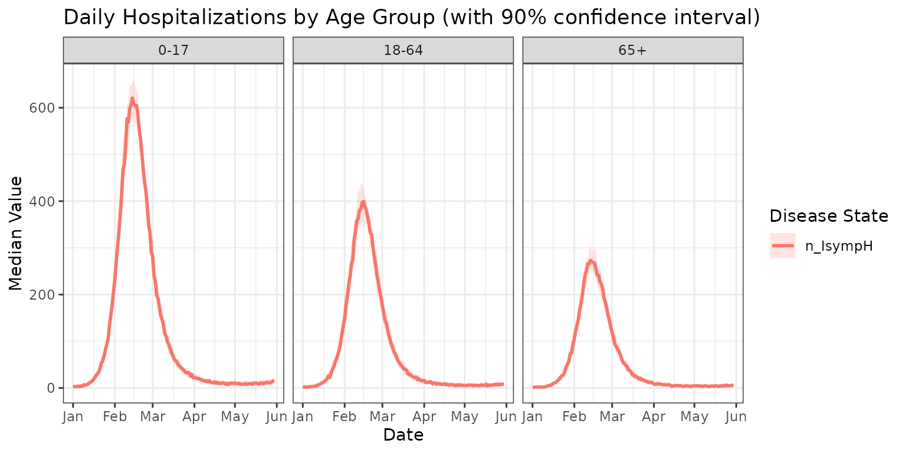
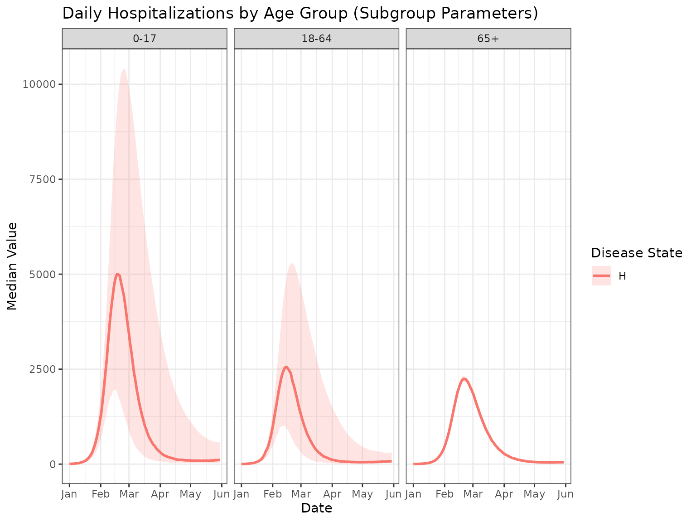

Running a Simulation with metaRVM
Source:vignettes/running-a-simulation.Rmd
running-a-simulation.RmdIntroduction
This vignette demonstrates how to run a metaRVM
simulation using the example configuration and data files included with
the package. This is a good way to get started and understand the basic
workflow.
Locating the Example Files
The metaRVM package includes a set of example files in
its extdata directory. To run the example, these files must
first be located. The system.file() function in R is the
recommended way to do this, as it finds the files wherever the package
is installed.
# Locate the example YAML configuration file
yaml_file <- system.file("extdata", "example_config.yaml", package = "MetaRVM")
print(yaml_file)
#> [1] "/home/runner/work/_temp/Library/MetaRVM/extdata/example_config.yaml"The yaml_file variable now holds the full path to the
example configuration file. This file is set up to use the other example
data files (also in the extdata directory) with relative
paths. Below is the content of the yaml file.
run_id: ExampleRun
model:
disease: flu
population_data:
initialization: population_init_n24.csv
vaccination: vaccination_n24.csv
mixing_matrix:
weekday_day: m_weekday_day.csv
weekday_night: m_weekday_night.csv
weekend_day: m_weekend_day.csv
weekend_night: m_weekend_night.csv
disease_params:
ts: 0.5
ve: 0.4
dv: 180
dp: 1
de: 3
da: 5
ds: 6
dh: 8
dr: 180
pea: 0.3
psr: 0.95
phr: 0.97
simulation_config:
start_date: 01/01/2023 # m/d/Y
length: 150
nsim: 1
nrep: 1
random_seed: 42Running the Simulation
Once the path to the configuration file is available, the simulation
can be run using the metaRVM() function.
# Load the metaRVM library
library(MetaRVM)
options(odin.verbose = FALSE)
# Run the simulation
sim_out <- metaRVM(yaml_file)
#> Loading required namespace: pkgbuildThe metaRVM() function will parse the YAML file, read
the associated data files, run the simulation, and return a
MetaRVMResults object.
Deep-dive into MetaRVM Classes
Working with Configuration Files
The simulation can be run by directly providing a YAML configuration
file path, or by creating a MetaRVMConfig object.
# Load configuration from YAML file
config_obj <- MetaRVMConfig$new(yaml_file)
# Examine the configuration
config_obj
#> MetaRVM Configuration Object
#> ============================
#> Config file: /home/runner/work/_temp/Library/MetaRVM/extdata/example_config.yaml
#> Parameters: 45
#> Parameter names (first 10): N_pop, disease, pop_map, category_names, S_ini, E_ini, I_asymp_ini, I_presymp_ini, I_symp_ini, H_ini ...
#> Population groups: 24
#> Start date: 2023-09-30
#> Population mapping: [ 24 rows x 4 columns]Exploring Configuration Parameters
The MetaRVMConfig class provides several methods to
explore the simulation arguments:
# List all available parameters
param_names <- config_obj$list_parameters()
head(param_names, 10)
#> [1] "N_pop" "disease" "pop_map" "category_names"
#> [5] "S_ini" "E_ini" "I_asymp_ini" "I_presymp_ini"
#> [9] "I_symp_ini" "H_ini"
# Get a summary of parameter types and sizes
param_summary <- config_obj$parameter_summary()
head(param_summary, 10)
#> parameter type length size
#> N_pop N_pop integer 1 1
#> disease disease character 1 1
#> pop_map pop_map data.table 4 4
#> category_names category_names character 3 3
#> S_ini S_ini integer 24 24
#> E_ini E_ini numeric 24 24
#> I_asymp_ini I_asymp_ini numeric 24 24
#> I_presymp_ini I_presymp_ini numeric 24 24
#> I_symp_ini I_symp_ini integer 24 24
#> H_ini H_ini numeric 24 24Accessing Demographic Information
One of MetaRVM’s key features is demographic stratification, and it’s ability to define parameters for specific demographic strata.
# Get user-defined demographic category names and values
category_names <- config_obj$get_category_names()
cat("Available categories:", paste(category_names, collapse = ", "), "\n")
#> Available categories: age, race, zone
# Example: inspect values for one category (if present)
if ("age" %in% category_names) {
age_categories <- config_obj$get_category_values("age")
cat("Age categories:", paste(age_categories, collapse = ", "), "\n")
}
#> Age categories: 0-17, 18-64, 65+Alternative Ways to Run the Simulation
# Method 1: Direct from file path
# sim_out <- metaRVM(config_file)
# Method 2: From MetaRVMConfig object
sim_out <- metaRVM(config_obj)
# Method 3: From parsed configuration list
config_list <- parse_config(yaml_file)
sim_out <- metaRVM(config_list)
# Method 4: Programmatic config with build_config() — no YAML file needed
ext <- function(x) system.file("extdata", x, package = "MetaRVM")
# sim_out <- metaRVM(build_config(
# disease = "flu",
# population_init = ext("population_init_n24.csv"),
# vaccination = ext("vaccination_n24.csv"),
# mixing_matrices = list(
# weekday_day = ext("m_weekday_day.csv"),
# weekday_night = ext("m_weekday_night.csv"),
# weekend_day = ext("m_weekend_day.csv"),
# weekend_night = ext("m_weekend_night.csv")
# ),
# disease_params = list(ts = 0.5, ve = 0.4, dv = 180, dp = 1, de = 3,
# da = 5, ds = 6, dh = 8, dr = 180,
# pea = 0.3, psr = 0.95, phr = 0.97),
# start_date = "01/01/2023", sim_length = 150, nsim = 1, nrep = 1
# ))Exploring the Results
The metaRVM() function returns a
MetaRVMResults object with formatted, analysis-ready data.
The results are formatted with calendar dates and demographic
attributes, and stored in a data frame called results:
# Look at the structure of formatted results
head(sim_out$results)
#> date age race zone disease_state value instance
#> <Date> <char> <char> <int> <char> <num> <int>
#> 1: 2023-10-01 0-17 A 11 D 0.00000 1
#> 2: 2023-10-01 0-17 A 11 E 15.00000 1
#> 3: 2023-10-01 0-17 A 11 H 0.00000 1
#> 4: 2023-10-01 0-17 A 11 I_all 27.00000 1
#> 5: 2023-10-01 0-17 A 11 I_asymp 0.00000 1
#> 6: 2023-10-01 0-17 A 11 I_eff 24.58742 1
# Check unique values for key variables
cat("Disease states:", paste(unique(sim_out$results$disease_state), collapse = ", "), "\n")
#> Disease states: D, E, H, I_all, I_asymp, I_eff, I_presymp, I_symp, P, R, S, S_alloc, S_eff_prod, S_src_int, V, V_alloc, V_src_int, cum_V, mob_pop, n_EI, n_EIpresymp, n_HD, n_HR, n_HRD, n_IasympR, n_IsympH, n_IsympR, n_IsympRH, n_RS, n_SE, n_SE_eff, n_SV, n_VE, n_VS, n_preIsymp, p_HRD, p_RS, p_SE, p_VE
cat("Date range:", paste(range(sim_out$results$date), collapse = " to "), "\n")
#> Date range: 2023-10-01 to 2024-02-27Data Subsetting and Filtering
The subset_data() method provides flexible filtering
across all demographic and temporal dimensions. It returns an object of
class MetaRVMResults.
# Subset by single criteria
hospitalized_data <- sim_out$subset_data(disease_states = "H")
hospitalized_data$results
#> date age race zone disease_state value instance
#> <Date> <char> <char> <int> <char> <num> <int>
#> 1: 2023-10-01 0-17 A 11 H 0 1
#> 2: 2023-10-01 0-17 A 22 H 1 1
#> 3: 2023-10-01 0-17 B 11 H 0 1
#> 4: 2023-10-01 0-17 B 22 H 1 1
#> 5: 2023-10-01 0-17 C 11 H 1 1
#> ---
#> 3596: 2024-02-27 65+ B 22 H 1 1
#> 3597: 2024-02-27 65+ C 11 H 0 1
#> 3598: 2024-02-27 65+ C 22 H 9 1
#> 3599: 2024-02-27 65+ D 11 H 7 1
#> 3600: 2024-02-27 65+ D 22 H 16 1
# Subset by multiple demographic categories
elderly_data <- sim_out$subset_data(
age = c("65+"),
disease_states = c("H", "D")
)
elderly_data$results
#> date age race zone disease_state value instance
#> <Date> <char> <char> <int> <char> <num> <int>
#> 1: 2023-10-01 65+ A 11 D 0 1
#> 2: 2023-10-01 65+ A 11 H 0 1
#> 3: 2023-10-01 65+ A 22 D 0 1
#> 4: 2023-10-01 65+ A 22 H 0 1
#> 5: 2023-10-01 65+ B 11 D 0 1
#> ---
#> 2396: 2024-02-27 65+ C 22 H 9 1
#> 2397: 2024-02-27 65+ D 11 D 36 1
#> 2398: 2024-02-27 65+ D 11 H 7 1
#> 2399: 2024-02-27 65+ D 22 D 79 1
#> 2400: 2024-02-27 65+ D 22 H 16 1
# Specific date range
peak_period <- sim_out$subset_data(
date_range = c(as.Date("2023-10-01"), as.Date("2023-12-31")),
disease_states = "H"
)
peak_period$results
#> date age race zone disease_state value instance
#> <Date> <char> <char> <int> <char> <num> <int>
#> 1: 2023-10-01 0-17 A 11 H 0 1
#> 2: 2023-10-01 0-17 A 22 H 1 1
#> 3: 2023-10-01 0-17 B 11 H 0 1
#> 4: 2023-10-01 0-17 B 22 H 1 1
#> 5: 2023-10-01 0-17 C 11 H 1 1
#> ---
#> 2204: 2023-12-31 65+ B 22 H 7 1
#> 2205: 2023-12-31 65+ C 11 H 11 1
#> 2206: 2023-12-31 65+ C 22 H 62 1
#> 2207: 2023-12-31 65+ D 11 H 36 1
#> 2208: 2023-12-31 65+ D 22 H 56 1Specifying Disease Parameters via Distributions
metaRVM allows for disease parameters to be specified as
distributions, which is useful for capturing uncertainty. When a
parameter is defined by a distribution, each simulation instance will
draw a new value from that distribution. For more details on the
available distributions and their parameters, refer to the
yaml-configuration vignette.
An example YAML file with parameter distributions is included in the
package, example_config_dist.yaml. Here is its content:
# Locate the example YAML configuration file with distributions
yaml_file_dist <- system.file("extdata", "example_config_dist.yaml", package = "MetaRVM")run_id: ExampleRun_Dist
model:
disease: flu
population_data:
initialization: population_init_n24.csv
vaccination: vaccination_n24.csv
mixing_matrix:
weekday_day: m_weekday_day.csv
weekday_night: m_weekday_night.csv
weekend_day: m_weekend_day.csv
weekend_night: m_weekend_night.csv
disease_params:
ts: 0.5
ve:
dist: uniform
min: 0.3
max: 0.5
dv: 180
dp: 1
de: 3
da:
dist: uniform
min: 4
max: 6
ds:
dist: uniform
min: 5
max: 7
dh:
dist: lognormal
mu: 2
sd: 0.5
dr: 180
pea: 0.3
psr: 0.95
phr: 0.97
simulation_config:
start_date: 01/01/2023 # m/d/Y
length: 150
nsim: 20 # Increased nsim for meaningful summary statistics
nrep: 1
random_seed: 42To run a simulation with this configuration, the file path is passed
to metaRVM.
# Run the simulation with the new configuration
sim_out_dist <- metaRVM(yaml_file_dist)Generating Summary Statistics across Demographics
The MetaRVMResults class provides basic summarization
functionality across multiple instances of the simulation, when one or
more disease parameters are specified via distribution, and there are
more than one simulations per configurations. The summarize
method generates output of class MetaRVMSummary which has a
plot method available. After a simulation is run with
parameter distributions, the summarize method can be used
to inspect variability in the results.
library(ggplot2)
# Summarize hospitalizations by age group
hospital_summary_dist <- sim_out_dist$summarize(
group_by = c("age"),
disease_states = "n_IsympH",
stats = c("median", "quantile"),
quantiles = c(0.05, 0.95)
)
# Plot the summary
hospital_summary_dist$plot() + ggtitle("Daily Hospitalizations by Age Group (with 90% confidence interval)") + theme_bw()
Running a Stochastic Simulation with Static Parameters
All MetaRVM simulations run in stochastic mode. Use nrep
to control the number of stochastic replicates per parameter set.
An example YAML file is included in the package,
example_config_stochastic.yaml. Here is its content:
# Locate the example YAML configuration file with distributions
yaml_file_stoch <- system.file("extdata", "example_config_stochastic.yaml", package = "MetaRVM")run_id: ExampleRun_Stochastic_Static
model:
disease: flu
population_data:
initialization: population_init_n24.csv
vaccination: vaccination_n24.csv
mixing_matrix:
weekday_day: m_weekday_day.csv
weekday_night: m_weekday_night.csv
weekend_day: m_weekend_day.csv
weekend_night: m_weekend_night.csv
disease_params:
ts: 0.5
ve: 0.4
dv: 180
dp: 1
de: 3
da: 5
ds: 6
dh: 8
dr: 180
pea: 0.3
psr: 0.95
phr: 0.97
simulation_config:
start_date: 01/01/2023 # m/d/Y
length: 150
nsim: 1
nrep: 5
random_seed: 42
sim_out_stoch <- metaRVM(yaml_file_stoch)Specifying Disease Parameters by Demographics
The disease parameters can also be specified for different
demographic subgroups. These subgroup-specific parameters will override
the global parameters. For more details, refer to the
yaml-configuration vignette. An example YAML file is
provided, example_config_subgroup_dist.yaml, that
demonstrates this feature. It also includes parameters defined by
distributions.
# Locate the example YAML configuration file with subgroup parameters
yaml_file_subgroup <- system.file("extdata", "example_config_subgroup_dist.yaml", package = "MetaRVM")run_id: ExampleRun_Subgroup_Dist
model:
disease: flu
population_data:
initialization: population_init_n24.csv
vaccination: vaccination_n24.csv
mixing_matrix:
weekday_day: m_weekday_day.csv
weekday_night: m_weekday_night.csv
weekend_day: m_weekend_day.csv
weekend_night: m_weekend_night.csv
disease_params:
ts: 0.5
ve:
dist: uniform
min: 0.3
max: 0.5
dv: 180
dp: 1
de: 3
da: 5
ds: 6
dh:
dist: lognormal
mu: 2
sd: 0.5
dr: 180
pea: 0.3
psr: 0.95
phr: 0.97
sub_disease_params:
age:
0-17:
pea: 0.08
18-64:
ts: 0.6
65+:
# This fixed value will override the global lognormal distribution for dh
dh: 10
phr: 0.9227
simulation_config:
start_date: 01/01/2023 # m/d/Y
length: 150
nsim: 20
nrep: 1
random_seed: 42Now, let’s run the simulation with this configuration.
# Run the simulation with the subgroup configuration
sim_out_subgroup <- metaRVM(yaml_file_subgroup)The results can now be plotted to evaluate the impact of
subgroup-specific parameters. For example, the number of
hospitalizations in the “65+” age group, which has a dh of
10, can be compared to other age groups that use the global
dh drawn from a lognormal distribution.
# Summarize hospitalizations by age group
hospital_summary_subgroup <- sim_out_subgroup$summarize(
group_by = c("age"),
disease_states = "H",
stats = c("median", "quantile"),
quantiles = c(0.025, 0.975)
)
# Plot the summary
hospital_summary_subgroup$plot() + ggtitle("Daily Hospitalizations by Age Group (Subgroup Parameters)") + theme_bw()
Running a Measles Simulation
MetaRVM supports measles alongside flu. The key differences in configuration are:
-
model: disease: measles— selects the measles engine. -
No vaccination file — vaccinated individuals are
seeded via
V10(one-dose) andV20(two-dose) columns in the population CSV. There is no time-varying vaccination schedule. -
Different disease parameters —
beta,de1,de2,di1,di2,prop_I1_Q,prop_I2_Q,V1_eff,V2_eff. - Different compartments — two-stage latent (E1→E2), two-stage infectious (I1→I2) with quarantined/unquarantined splits, plus vaccinated and breakthrough chains (V1, V2, V1E1, …).
A packaged measles example can be run directly:
yaml_file_measles <- system.file("extdata", "example_config_measles_min.yaml", package = "MetaRVM")
sim_out_measles <- metaRVM(yaml_file_measles)
# Inspect measles compartment names — note two-stage E1/E2 and I1_U/I2_U
head(sim_out_measles$results)
#> date age_group zone disease_state value instance
#> <Date> <char> <char> <char> <num> <int>
#> 1: 2023-10-01 adult urban E1 1 1
#> 2: 2023-10-01 adult urban E2 0 1
#> 3: 2023-10-01 adult urban I1_Q 0 1
#> 4: 2023-10-01 adult urban I1_U 0 1
#> 5: 2023-10-01 adult urban I1_all 0 1
#> 6: 2023-10-01 adult urban I2_Q 0 1
cat("Disease states:", paste(unique(sim_out_measles$results$disease_state), collapse = ", "), "\n")
#> Disease states: E1, E2, I1_Q, I1_U, I1_all, I2_Q, I2_U, I2_all, IU_nvac_all, I_all, I_nvac_all, R, S, V1, V1E1, V1E2, V1I1_Q, V1I1_U, V1I1_all, V1I2_Q, V1I2_U, V1I2_all, V1IU_all, V1I_all, V1R, V2, V2E1, V2E2, V2I1_Q, V2I1_U, V2I1_all, V2I2_Q, V2I2_U, V2I2_all, V2IU_all, V2I_all, V2R, n_SE1, n_V1E1, n_V2E1, p_SE1, p_V1E1, p_V2E1The subset_data() method works the same way for measles.
Use the "incidence" alias to retrieve the combined
new-infection flows across unvaccinated and vaccinated individuals:
# Daily incidence across all populations
incidence <- sim_out_measles$subset_data(disease_states = "incidence")
head(incidence$results)
#> date age_group zone disease_state value instance
#> <Date> <char> <char> <char> <num> <int>
#> 1: 2023-10-01 adult urban n_SE1 2 1
#> 2: 2023-10-01 adult urban n_V1E1 0 1
#> 3: 2023-10-01 adult urban n_V2E1 0 1
#> 4: 2023-10-01 child rural n_SE1 0 1
#> 5: 2023-10-01 child rural n_V1E1 0 1
#> 6: 2023-10-01 child rural n_V2E1 0 1